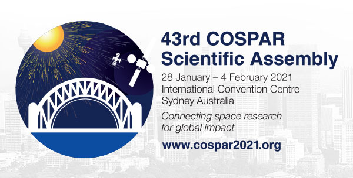
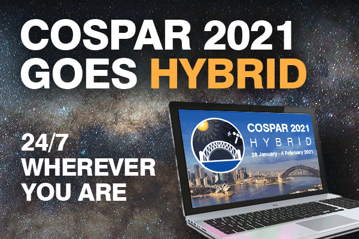

| *|MC:SUBJECT|* | View this email in your browser |
|
|
|  |
|  |
Participation in COSPAR-2021-Hybrid: How will it work?
COSPAR-2021-Hybrid will be held from 28 January 2021 to 4 February 2021 will be Hybrid – a blend of in-person in Sydney, Australia and virtual (both interactive and on-demand). As a consequence of COVID-19 and Australian government restrictions on travel, it is likely that only Australian residents will be able to attend in person. Even with these changes occurring in all organizations around the globe, the organizers of COSPAR-2021-Hybrid are fully committed and prepared to view this an opportunity for COSPAR and offer a global gathering that is stimulating and rewarding, with far more opportunities for engagement with each other and for more access to content than is normally possible in a large in-person Assembly. Indeed, lessons in 2021 will be applied to future COSPAR Assemblies. A reasonable expectation is that in the future hybrid conferences, with varying levels of in-person and virtual participation, will remain an attractive option for many, and COSPAR is fully prepared to offer the best possible hybrid event. In recognition that most participants in COSPAR-2021-Hybrid will do so in the virtual sense, all aspects of the scientific program will be delivered such that they can be accessed virtually. At the same time, in-person participation will be seamlessly integrated into the delivery. This document is intended to provide you with details of how the Scientific Program for COSPAR-2021-Hybrid will be conducted, of your opportunities and responsibilities for participating in the Scientific Program and of your opportunity for a reduced registration rate in return for on-time delivery of pre-recorded presentations. The Scientific Program for COSPAR-2021-Hybrid is the program for COSPAR 2020, shifted from August to 28 January until 4 February, the new dates of COSPAR-2021-Hybrid. The only difference, as explained below, is how the program will be offered, so that COSPAR-2021-Hybrid will be a truly global Assembly, with full participation in multiple time zones. Also included below is information on how interdisciplinary and other Assembly-wide events will be held, on technical support that will be provided to virtual presenters, as well as summaries of the opportunities available for virtual and for in-person participants. All of these should convince you that COSPAR-2021-Hybrid will be an outstanding Assembly.
|
|
The details below are intended to provide required information to everyone associated with the Scientific Program for COSPAR-2021-Hybrid: the authors of all accepted abstracts, the Main Scientific Organizers (MSOs) of all scientific events, the Chairs of Scientific Commissions and Panels, and the COSPAR Program Committee. The information describes how each scientific session will be delivered for participation worldwide, and describes how poster sessions will be conducted and the responsibilities of poster presenters. All virtual presenters will be well assisted in preparing for and participating in COSPAR-2021-Hybrid. The plans for Assembly-wide events such as interdisciplinary lectures are provided, as well as preliminary information, where available, on related events such as cross-disciplinary workshops, career fairs, etc., that will be held in conjunction with the Assembly. A summary is provided of the opportunities that are available in COSPAR-2021-Hybrid for the virtual and in-person participants, as well as the approach that is being taken to registration fees in this hybrid context. Finally, the key dates between now and the Assembly are outlined. 1. The Basics for COSPAR-2021-Hybrid
2. COSPAR-2021-Hybrid, a true global AssemblyThe following are the activities and actions that will occur to deliver a Scientific Program for COSPAR-2021-Hybrid that can be enjoyed, with active participation, worldwide. These activities and actions apply to the Scientific Program, which was established for COSPAR-2021, when it was postponed from COSPAR 2020. There is no change in the program (themes, sessions, layout), now that COSPAR-2021 is COSPAR-2021-Hybrid.
3. Technical support for virtual participants in COSPAR-2021-Hybrid.The Professional Conference Organizer (PCO) for COSPAR-2021-Hybrid is ICMS Australasia (ICMSA), whose Digital Event Team will arrange for, implement, manage and execute the complex and comprehensive communications systems that will be employed for COSPAR-2021-Hybrid. ICMSA has extensive experience in successful hybrid conferences, and it is for this reason that COSPAR is confident that COSPAR-2021-Hybrid will be a success. Specifically, the ICMSA Digital Team will assist all participants in COSPAR-2021-Hybrid as follows.
4. Interdisciplinary Lectures, cross-disciplinary workshops and Assembly-wide eventsAn outstanding selection of speakers from across the globe will deliver Interdisciplinary Lectures through the on-line platform. All Interdisciplinary Lectures will be live-streamed and feature live moderated Q&A to ensure maximum benefit to the COSPAR scientific community. These Interdisciplinary Lectures will occur prior to the commencement of the main Programming to ensure maximum participation, each day, and also be available as on demand content. Cross-disciplinary workshops, panel events, and public lectures will also be a highlight on the on-line platform. 5. Summary of the benefits of COSPAR-2021-Hybrid, for virtual and in-person delegatesThe virtual participants in COSPAR-2021-Hybrid will receive
The in-person participants in COSPAR-2021-Hybrid will receive the following benefits:
6. Registration FeesThe above, and much more, will enable a global gathering that is stimulating and rewarding. It will provide far more opportunities for engagement with each other and for access to content than is normally possible at a large Assembly. The in-person-related costs associated with running the event will naturally go down significantly, but the provision and delivery of technology that pushes the state-of-the-art for global conferences in the face of a pandemic entails significant costs. Therefore, the decision has been taken to maintain the full, published registration fee. However, the early bird rate will be extended to the end of December 2020 and of most importance to presenters at COSPAR-2021-Hybrid, a further-reduced registration fee is available for those presenters who comply with the request to submit their pre-recorded contributions by the end of November. Submitting pre-recorded contributions in time to obtain the reduced rate will allow the organizers of COSPAR-2021-Hybrid to populate the on-line platform for seamless content delivery before 28 January 2021. Effective with the release of this document, a discounted “Presenters Early Bird Rate” is introduced, that will expire at the end of November 2020. Access to this new rate will be triggered by upload of the presenter’s pre-recordings prior to the end of November. Shown in the following Table is a summary of all registration rates.
7. Key DatesThe above, and much more, will enable a global gathering that is stimulating and rewarding. The following Table summarizes the key dates associated with the activities and actions described in this document.
8. ConclusionThe re-imagined COSPAR-2021-Hybrid is now filled with unique offerings and benefits that will contribute to COSPAR’s mission by bringing the space research community together to connect, share, partner and grow, even more successfully than before. COSPAR-2021-Hybrid aims to be a global gathering that is stimulating and rewarding, with far more opportunities for engagement with each other than anticipated using the technology that is available to us. Our guiding principles of innovation and exploration will be used to navigate the journey to the delivery of COSPAR-2021-Hybrid and beyond, shaping future Assemblies to the possibilities for a new way of sharing space science and, more generally, space research. |
COSPAR-2021-Hybrid Secretariat
Emma Bowyer Contact COSPAR HQ
Aaron Janosky For further information regarding the COSPAR-2021-Hybrid scientific program also visit COSPAR (cospar@cosparhq.cnes.fr). Scientific assembly abstract submission. |
General Enquiries
Selina Moscatt Sponsorship & ExhibitionsMarketing & Communication
Suellen Holland Accommodation Management
Adriane Pinto Registration
Jessica Moebus This email was sent to *|EMAIL|*. |